Try NMF on some simple sparse examples
Matthew Stephens
2019-10-30
Last updated: 2019-10-30
Checks: 7 0
Knit directory: misc/analysis/
This reproducible R Markdown analysis was created with workflowr (version 1.4.0). The Checks tab describes the reproducibility checks that were applied when the results were created. The Past versions tab lists the development history.
Great! Since the R Markdown file has been committed to the Git repository, you know the exact version of the code that produced these results.
Great job! The global environment was empty. Objects defined in the global environment can affect the analysis in your R Markdown file in unknown ways. For reproduciblity it’s best to always run the code in an empty environment.
The command set.seed(1) was run prior to running the code in the R Markdown file. Setting a seed ensures that any results that rely on randomness, e.g. subsampling or permutations, are reproducible.
Great job! Recording the operating system, R version, and package versions is critical for reproducibility.
Nice! There were no cached chunks for this analysis, so you can be confident that you successfully produced the results during this run.
Great job! Using relative paths to the files within your workflowr project makes it easier to run your code on other machines.
Great! You are using Git for version control. Tracking code development and connecting the code version to the results is critical for reproducibility. The version displayed above was the version of the Git repository at the time these results were generated.
Note that you need to be careful to ensure that all relevant files for the analysis have been committed to Git prior to generating the results (you can use wflow_publish or wflow_git_commit). workflowr only checks the R Markdown file, but you know if there are other scripts or data files that it depends on. Below is the status of the Git repository when the results were generated:
Ignored files:
Ignored: .DS_Store
Ignored: .Rhistory
Ignored: .Rproj.user/
Ignored: analysis/.RData
Ignored: analysis/.Rhistory
Ignored: analysis/ALStruct_cache/
Ignored: data/.Rhistory
Ignored: data/pbmc/
Ignored: docs/figure/.DS_Store
Untracked files:
Untracked: .dropbox
Untracked: Icon
Untracked: analysis/GTEX-cogaps.Rmd
Untracked: analysis/PACS.Rmd
Untracked: analysis/SPCAvRP.rmd
Untracked: analysis/compare-transformed-models.Rmd
Untracked: analysis/cormotif.Rmd
Untracked: analysis/cp_ash.Rmd
Untracked: analysis/eQTL.perm.rand.pdf
Untracked: analysis/eb_prepilot.Rmd
Untracked: analysis/flash_test_tree.Rmd
Untracked: analysis/ieQTL.perm.rand.pdf
Untracked: analysis/m6amash.Rmd
Untracked: analysis/mash_bhat_z.Rmd
Untracked: analysis/mash_ieqtl_permutations.Rmd
Untracked: analysis/mixsqp.Rmd
Untracked: analysis/mr_ash_modular.Rmd
Untracked: analysis/mr_ash_parameterization.Rmd
Untracked: analysis/nejm.Rmd
Untracked: analysis/normalize.Rmd
Untracked: analysis/pbmc.Rmd
Untracked: analysis/poisson_transform.Rmd
Untracked: analysis/pseudodata.Rmd
Untracked: analysis/ridge_iterative_splitting.Rmd
Untracked: analysis/sc_bimodal.Rmd
Untracked: analysis/susie_en.Rmd
Untracked: analysis/susie_z_investigate.Rmd
Untracked: analysis/svd-timing.Rmd
Untracked: analysis/temp.Rmd
Untracked: analysis/test-figure/
Untracked: analysis/test.Rmd
Untracked: analysis/test.Rpres
Untracked: analysis/test.md
Untracked: analysis/test_sparse.Rmd
Untracked: analysis/z.txt
Untracked: code/multivariate_testfuncs.R
Untracked: data/4matthew/
Untracked: data/4matthew2/
Untracked: data/E-MTAB-2805.processed.1/
Untracked: data/ENSG00000156738.Sim_Y2.RDS
Untracked: data/GDS5363_full.soft.gz
Untracked: data/GSE41265_allGenesTPM.txt
Untracked: data/Muscle_Skeletal.ACTN3.pm1Mb.RDS
Untracked: data/Thyroid.FMO2.pm1Mb.RDS
Untracked: data/bmass.HaemgenRBC2016.MAF01.Vs2.MergedDataSources.200kRanSubset.ChrBPMAFMarkerZScores.vs1.txt.gz
Untracked: data/bmass.HaemgenRBC2016.Vs2.NewSNPs.ZScores.hclust.vs1.txt
Untracked: data/bmass.HaemgenRBC2016.Vs2.PreviousSNPs.ZScores.hclust.vs1.txt
Untracked: data/eb_prepilot/
Untracked: data/finemap_data/fmo2.sim/b.txt
Untracked: data/finemap_data/fmo2.sim/dap_out.txt
Untracked: data/finemap_data/fmo2.sim/dap_out2.txt
Untracked: data/finemap_data/fmo2.sim/dap_out2_snp.txt
Untracked: data/finemap_data/fmo2.sim/dap_out_snp.txt
Untracked: data/finemap_data/fmo2.sim/data
Untracked: data/finemap_data/fmo2.sim/fmo2.sim.config
Untracked: data/finemap_data/fmo2.sim/fmo2.sim.k
Untracked: data/finemap_data/fmo2.sim/fmo2.sim.k4.config
Untracked: data/finemap_data/fmo2.sim/fmo2.sim.k4.snp
Untracked: data/finemap_data/fmo2.sim/fmo2.sim.ld
Untracked: data/finemap_data/fmo2.sim/fmo2.sim.snp
Untracked: data/finemap_data/fmo2.sim/fmo2.sim.z
Untracked: data/finemap_data/fmo2.sim/pos.txt
Untracked: data/logm.csv
Untracked: data/m.cd.RDS
Untracked: data/m.cdu.old.RDS
Untracked: data/m.new.cd.RDS
Untracked: data/m.old.cd.RDS
Untracked: data/mainbib.bib.old
Untracked: data/mat.csv
Untracked: data/mat.txt
Untracked: data/mat_new.csv
Untracked: data/matrix_lik.rds
Untracked: data/paintor_data/
Untracked: data/temp.txt
Untracked: data/y.txt
Untracked: data/y_f.txt
Untracked: data/zscore_jointLCLs_m6AQTLs_susie_eQTLpruned.rds
Untracked: data/zscore_jointLCLs_random.rds
Untracked: docs/figure/cp_ash.Rmd/
Untracked: docs/figure/eigen.Rmd/
Untracked: docs/figure/fmo2.sim.Rmd/
Untracked: docs/figure/mr_ash_modular.Rmd/
Untracked: docs/figure/newVB.elbo.Rmd/
Untracked: docs/figure/poisson_transform.Rmd/
Untracked: docs/figure/rbc_zscore_mash2.Rmd/
Untracked: docs/figure/rbc_zscore_mash2_analysis.Rmd/
Untracked: docs/figure/rbc_zscores.Rmd/
Untracked: docs/figure/ridge_iterative_splitting.Rmd/
Untracked: docs/figure/susie_en.Rmd/
Untracked: docs/figure/test.Rmd/
Untracked: docs/trend_files/
Untracked: docs/z.txt
Untracked: explore_udi.R
Untracked: output/fit.k10.rds
Untracked: output/fit.varbvs.RDS
Untracked: output/glmnet.fit.RDS
Untracked: output/test.bv.txt
Untracked: output/test.gamma.txt
Untracked: output/test.hyp.txt
Untracked: output/test.log.txt
Untracked: output/test.param.txt
Untracked: output/test2.bv.txt
Untracked: output/test2.gamma.txt
Untracked: output/test2.hyp.txt
Untracked: output/test2.log.txt
Untracked: output/test2.param.txt
Untracked: output/test3.bv.txt
Untracked: output/test3.gamma.txt
Untracked: output/test3.hyp.txt
Untracked: output/test3.log.txt
Untracked: output/test3.param.txt
Untracked: output/test4.bv.txt
Untracked: output/test4.gamma.txt
Untracked: output/test4.hyp.txt
Untracked: output/test4.log.txt
Untracked: output/test4.param.txt
Untracked: output/test5.bv.txt
Untracked: output/test5.gamma.txt
Untracked: output/test5.hyp.txt
Untracked: output/test5.log.txt
Untracked: output/test5.param.txt
Unstaged changes:
Modified: analysis/index.Rmd
Modified: analysis/minque.Rmd
Note that any generated files, e.g. HTML, png, CSS, etc., are not included in this status report because it is ok for generated content to have uncommitted changes.
These are the previous versions of the R Markdown and HTML files. If you’ve configured a remote Git repository (see ?wflow_git_remote), click on the hyperlinks in the table below to view them.
| File | Version | Author | Date | Message |
|---|---|---|---|---|
| Rmd | f3a8448 | Matthew Stephens | 2019-10-30 | wflow_publish(“nmf_sparse.Rmd”) |
library("fastTopics")
library("NNLM") Introduction
The goal is to do some simple simulations where the factors are sparse and look at the sparsity of the solutions from regular (unpenalized) nmf.
We simulate data with 3 factors with a “block-like”" structure.
set.seed(123)
n = 99
p = 300
k= 3
L = matrix(0, nrow=n, ncol=k)
F = matrix(0, nrow=p, ncol=k)
L[1:(n/3),1] = 1
L[((n/3)+1):(2*n/3),2] = 1
L[((2*n/3)+1):n,3] = 1
F[1:(p/3),1] = 1+10*runif(p/3)
F[((p/3)+1):(2*p/3),2] = 1+10*runif(p/3)
F[((2*p/3)+1):p,3] = 1+10*runif(p/3)
lambda = L %*% t(F)
X = matrix(rpois(n=length(lambda),lambda),nrow=n)
image(X)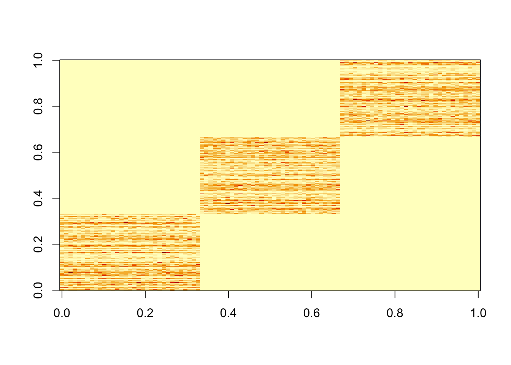
Now run the methods, and compute the Poisson log-likelihoods.
fit_lee = NNLM::nnmf(A = X, k = 3, loss = "mkl", method = "lee", max.iter = 10000)
## scd
fit_scd = NNLM::nnmf(A = X, k = 3, loss = "mkl", method = "scd", max.iter = 10000)
k=3
fit0 <- list(F = matrix(runif(p*k),p,k),
L = matrix(runif(n*k),n,k))
fit_sqp = altsqp(X,fit0,numiter = 20)Running 20 EM/SQP updates (fastTopics version 0.1-78)
Extrapolation is not active.
Data are 99 x 300 matrix with 32.2% nonzero proportion.
Optimization settings used:
+ numem: 1 + beta.init: 0.50 + activesetconvtol: 1.00e-10
+ numsqp: 4 + beta.increase: 1.10 + suffdecr: 1.00e-02
+ e: 1.00e-15 + beta.reduce: 0.75 + stepsizereduce: 7.50e-01
+ betamax.increase: 1.05 + minstepsize: 1.00e-10
+ zerothreshold: 1.00e-10
+ zerosearchdir: 1.00e-15
iter objective (cost fn) mean.diff beta
1 -8.094360852546e+03 3.313e+00 0.0e+00
2 -5.413875561606e+04 6.587e+00 0.0e+00
3 -5.413875561606e+04 0.000e+00 0.0e+00
4 -5.413875561606e+04 0.000e+00 0.0e+00
5 -5.413875561606e+04 0.000e+00 0.0e+00
6 -5.413875561606e+04 0.000e+00 0.0e+00
7 -5.413875561606e+04 0.000e+00 0.0e+00
8 -5.413875561606e+04 0.000e+00 0.0e+00
9 -5.413875561606e+04 0.000e+00 0.0e+00
10 -5.413875561606e+04 0.000e+00 0.0e+00
11 -5.413875561606e+04 0.000e+00 0.0e+00
12 -5.413875561606e+04 0.000e+00 0.0e+00
13 -5.413875561606e+04 0.000e+00 0.0e+00
14 -5.413875561606e+04 0.000e+00 0.0e+00
15 -5.413875561606e+04 0.000e+00 0.0e+00
16 -5.413875561606e+04 0.000e+00 0.0e+00
17 -5.413875561606e+04 0.000e+00 0.0e+00
18 -5.413875561606e+04 0.000e+00 0.0e+00
19 -5.413875561606e+04 0.000e+00 0.0e+00
20 -5.413875561606e+04 0.000e+00 0.0e+00sum(dpois(X, fit_sqp$L %*% t(fit_sqp$F),log=TRUE))[1] -21749.2sum(dpois(X, fit_lee$W %*% fit_lee$H,log=TRUE))[1] -21749.2sum(dpois(X, fit_scd$W %*% fit_scd$H,log=TRUE))[1] -21749.2So all three find the same solution.
Let’s look at a factor/loading: the results are highly sparse.
plot(fit_sqp$L[,1],main="estimated loadings 1")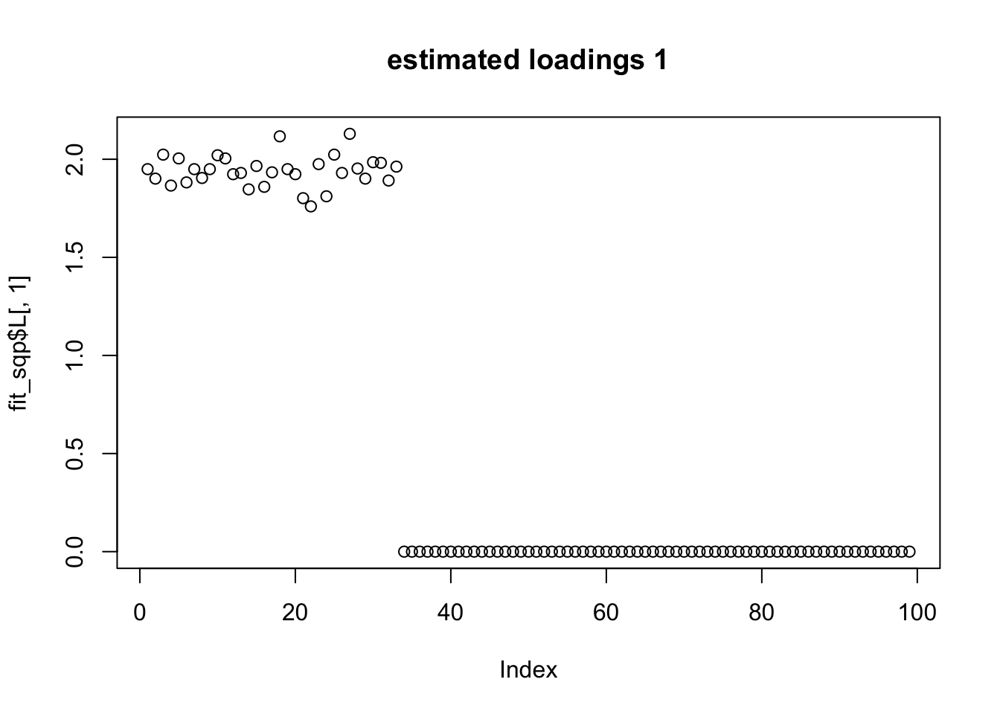
plot(fit_sqp$L[,2],main="estimated loadings 2")
plot(fit_sqp$L[,3],main="estimated loadings 3")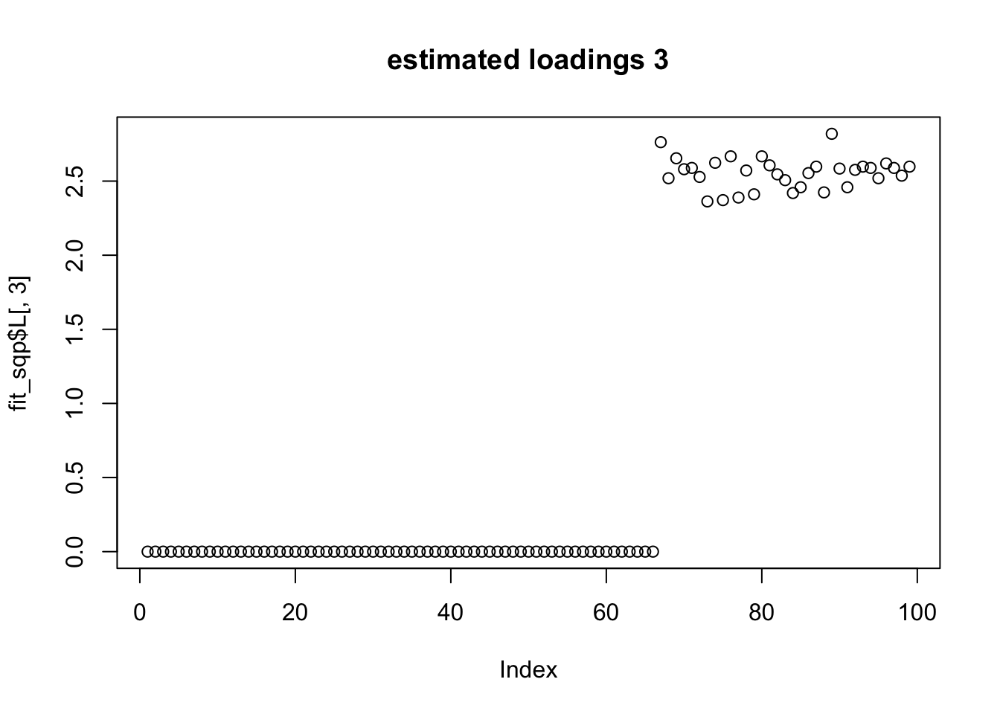
Add a dense fourth factor
Now I add a fourth factor that is dense. Note that we can make the problem much harder by making the 4th (dense) factor have larger PVE (increase mfac in the code). That may be useful for comparing methods on a harder problem…
set.seed(123)
n = 99
p = 300
k= 4
mfac = 2 # controls PVE of dense factor
L = matrix(0, nrow=n, ncol=k)
F = matrix(0, nrow=p, ncol=k)
L[1:(n/3),1] = 1
L[((n/3)+1):(2*n/3),2] = 1
L[((2*n/3)+1):n,3] = 1
L[,4] = 1+mfac*runif(n)
F[1:(p/3),1] = 1+10*runif(p/3)
F[((p/3)+1):(2*p/3),2] = 1+10*runif(p/3)
F[((2*p/3)+1):p,3] = 1+10*runif(p/3)
F[,4]= 1+mfac*runif(p)
lambda = L %*% t(F)
X = matrix(rpois(n=length(lambda),lambda),nrow=n)
image(X)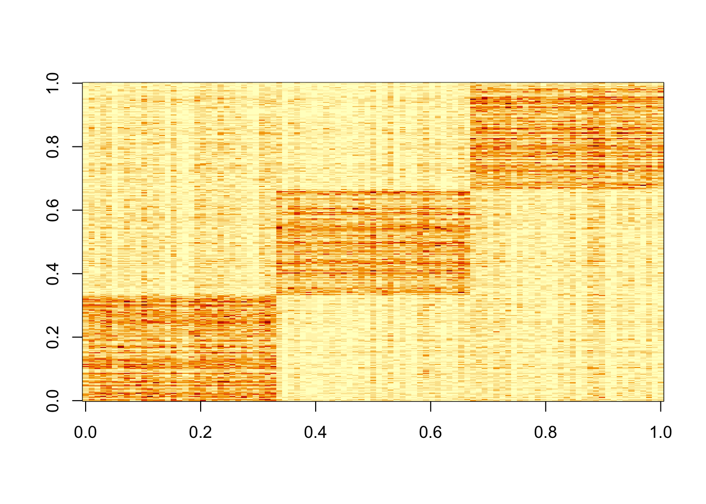
Run the methods. I also run altsqp initialized from the truth to check if it affects the result.
fit_lee = NNLM::nnmf(A = X, k = 4, loss = "mkl", method = "lee", max.iter = 10000)
## scd
fit_scd = NNLM::nnmf(A = X, k = 4, loss = "mkl", method = "scd", max.iter = 10000)
fit0 <- list(F = matrix(runif(p*k),p,k),
L = matrix(runif(n*k),n,k))
fit_sqp = altsqp(X,fit0,numiter = 50,verbose = FALSE)
# also fit initialized from truth
fit_true <- list(F = F,L = L)
fit_sqp2 = altsqp(X,fit_true,numiter = 20)Running 20 EM/SQP updates (fastTopics version 0.1-78)
Extrapolation is not active.
Data are 99 x 300 matrix with 96.8% nonzero proportion.
Optimization settings used:
+ numem: 1 + beta.init: 0.50 + activesetconvtol: 1.00e-10
+ numsqp: 4 + beta.increase: 1.10 + suffdecr: 1.00e-02
+ e: 1.00e-15 + beta.reduce: 0.75 + stepsizereduce: 7.50e-01
+ betamax.increase: 1.05 + minstepsize: 1.00e-10
+ zerothreshold: 1.00e-10
+ zerosearchdir: 1.00e-15
iter objective (cost fn) mean.diff beta
1 -1.699007460488e+05 2.617e-01 0.0e+00
2 -1.699933343975e+05 1.243e-02 0.0e+00
3 -1.700263498206e+05 3.218e-03 0.0e+00
4 -1.700444090203e+05 1.462e-03 0.0e+00
5 -1.700561833421e+05 8.370e-04 0.0e+00
6 -1.700643725657e+05 5.229e-04 0.0e+00
7 -1.700703067306e+05 3.454e-04 0.0e+00
8 -1.700747398206e+05 2.270e-04 0.0e+00
9 -1.700782111181e+05 1.562e-04 0.0e+00
10 -1.700810446626e+05 1.134e-04 0.0e+00
11 -1.700834123143e+05 8.706e-05 0.0e+00
12 -1.700854138313e+05 6.820e-05 0.0e+00
13 -1.700871178434e+05 5.390e-05 0.0e+00
14 -1.700885759998e+05 4.409e-05 0.0e+00
15 -1.700898226973e+05 3.643e-05 0.0e+00
16 -1.700908897079e+05 3.051e-05 0.0e+00
17 -1.700918047383e+05 2.510e-05 0.0e+00
18 -1.700925924331e+05 2.058e-05 0.0e+00
19 -1.700932750151e+05 1.678e-05 0.0e+00
20 -1.700938730579e+05 1.389e-05 0.0e+00sum(dpois(X, fit_lee$W %*% fit_lee$H,log=TRUE))[1] -64324.04sum(dpois(X, fit_scd$W %*% fit_scd$H,log=TRUE))[1] -64255.48sum(dpois(X, fit_sqp$L %*% t(fit_sqp$F),log=TRUE))[1] -64258.08sum(dpois(X, fit_sqp2$L %*% t(fit_sqp2$F),log=TRUE))[1] -64261.33sum(dpois(X, L %*% t(F),log=TRUE))[1] -65129.25Here scd finds the highest log-likelihood. All the methods find a solution whose loglikelihood exceeds the oracle.
Look at the loadings, we see that the sparse loadings are a bit “messy”.
for(i in 1:k){
plot(fit_scd$W[,i],main=paste0("estimated loadings ",i))
}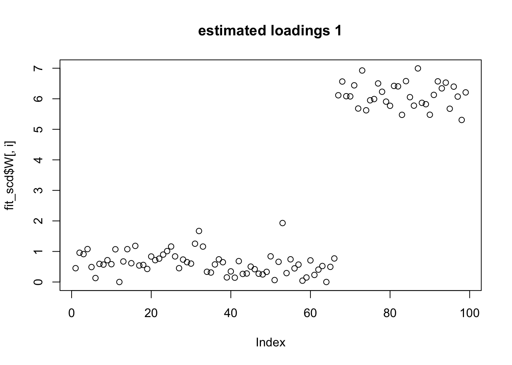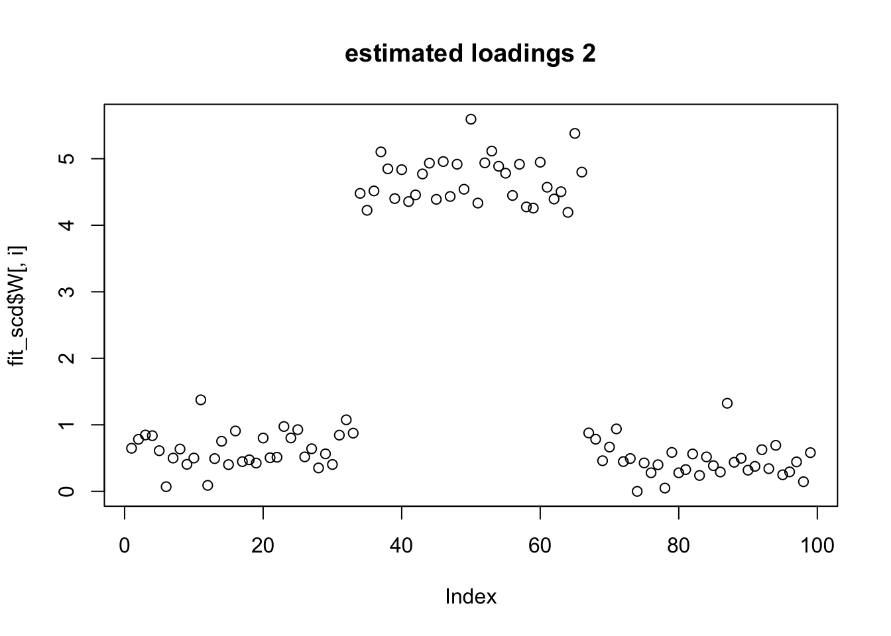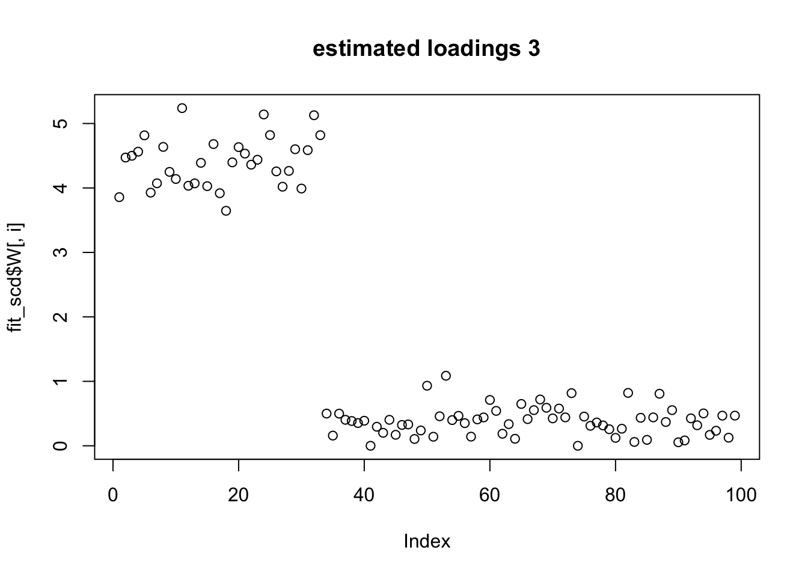
Try L1 penalty
Here we try adding an L1 penalty to induce sparsity. It does not really seem to achieve this goal. I am not entirely sure why - there may be something more to understand here.
First fit with penalty =1,10,100. We see the loadings are not really sparse.
fit_scd_L1.1 = NNLM::nnmf(A = X, k = 4, loss = "mkl", method = "scd", max.iter = 10000, alpha=c(0,0,1))
fit_scd_L1.10 = NNLM::nnmf(A = X, k = 4, loss = "mkl", method = "scd", max.iter = 10000, alpha=c(0,0,10))
fit_scd_L1.100 = NNLM::nnmf(A = X, k = 4, loss = "mkl", method = "scd", max.iter = 10000, alpha=c(0,0,100))
for(i in 1:k){
plot(fit_scd_L1.1$W[,i],main=paste0("L1 penalty = 1: estimated loadings ",i))
}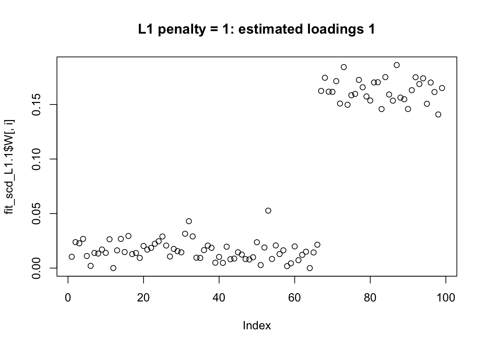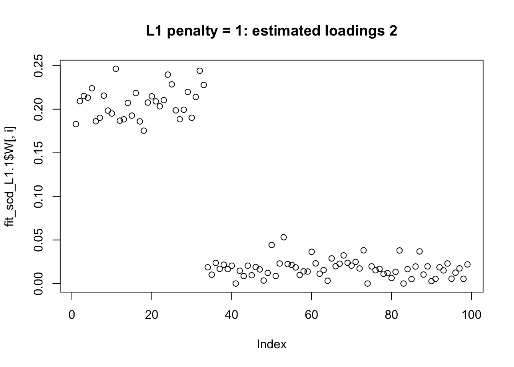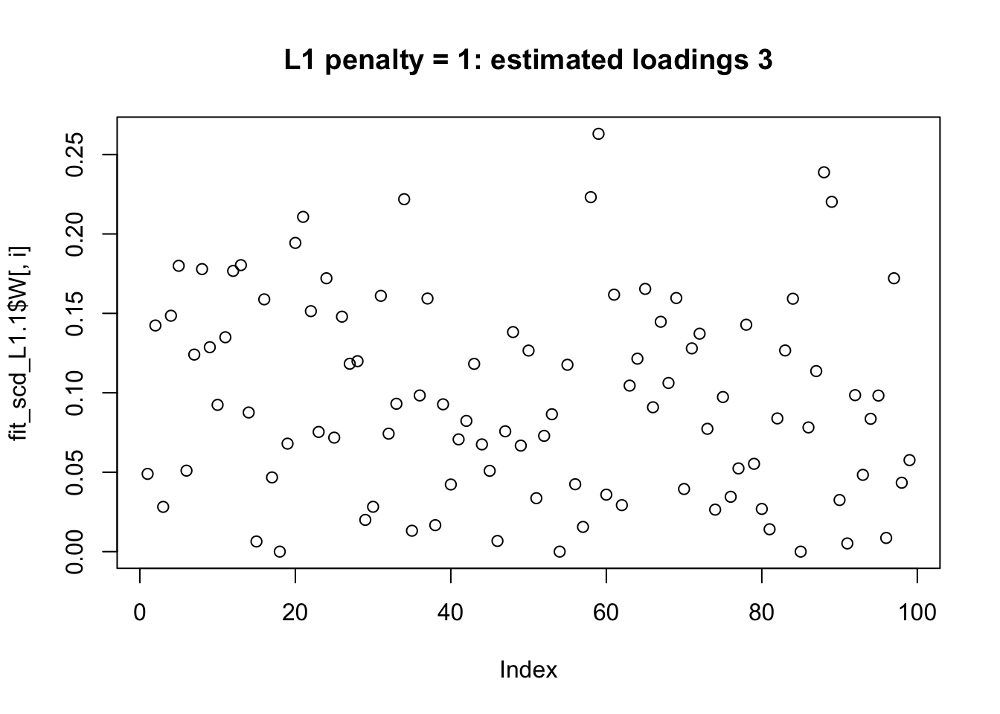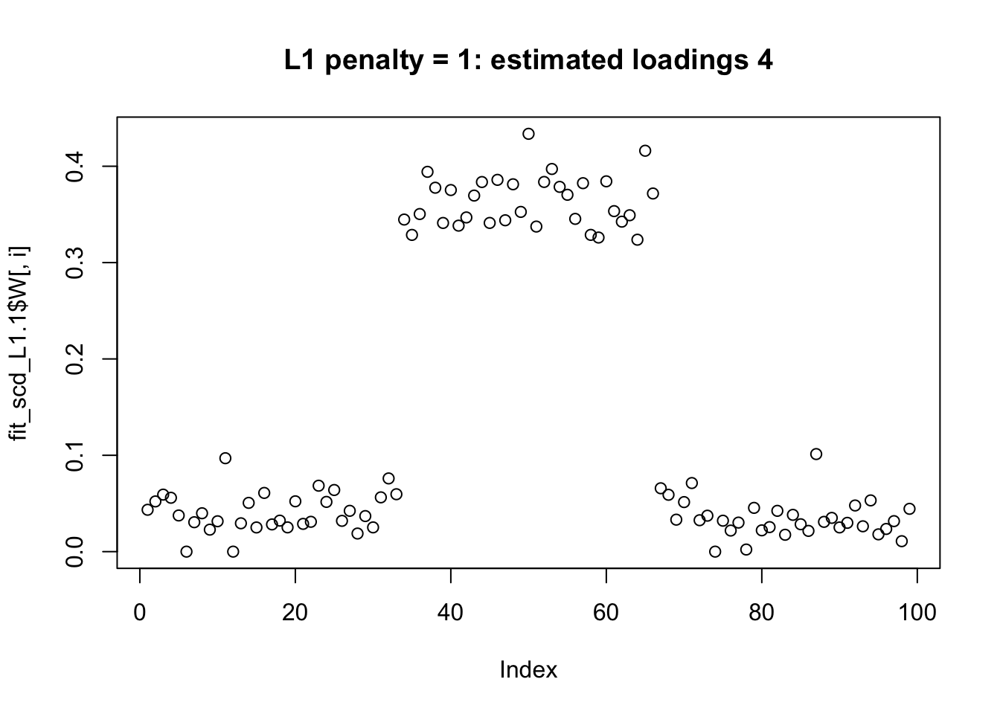
for(i in 1:k){
plot(fit_scd_L1.1$W[,i],main=paste0("L1 penalty = 10: estimated loadings ",i))
}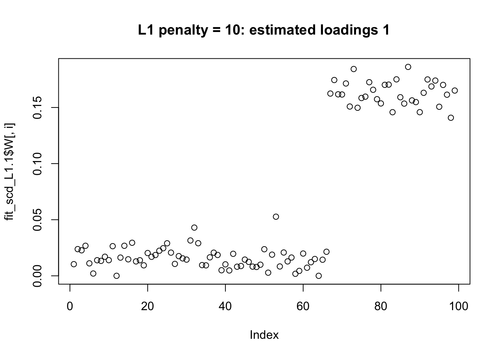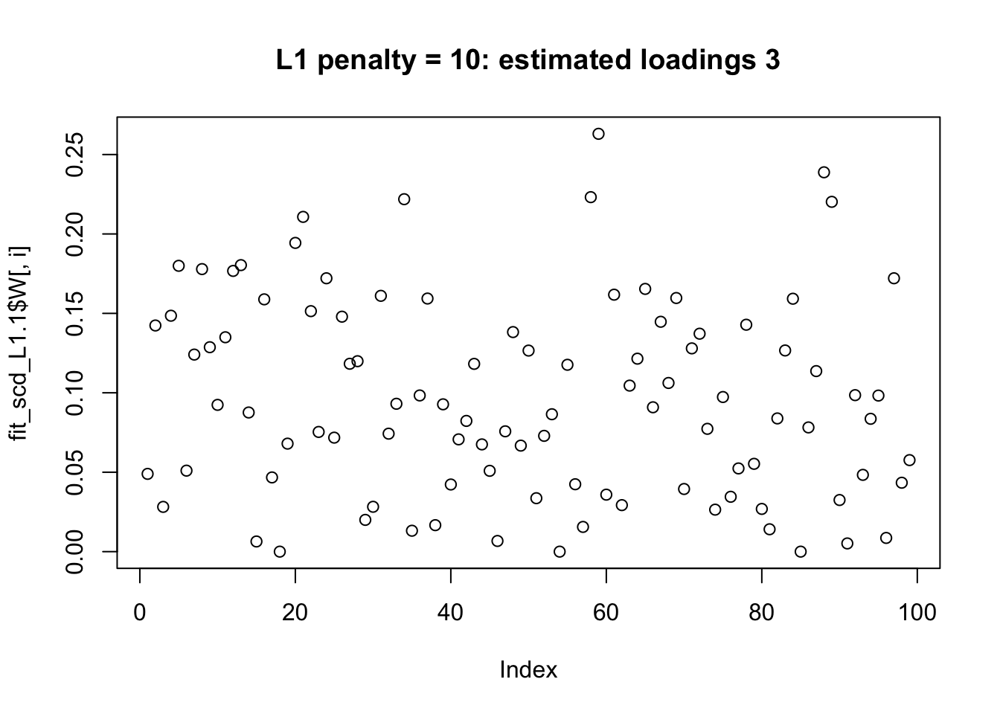
for(i in 1:k){
plot(fit_scd_L1.100$H[i,],main=paste0("L1 penalty = 100: estimated loadings ",i))
}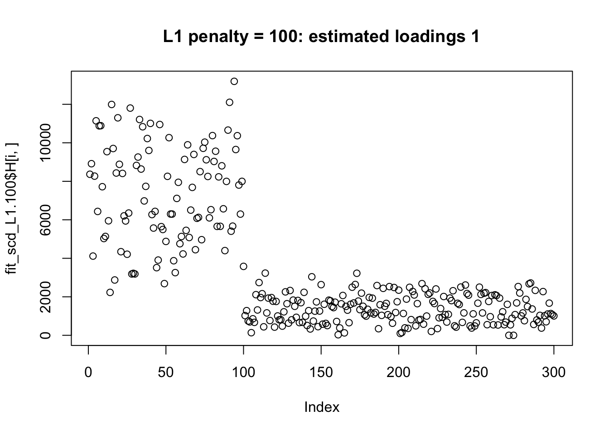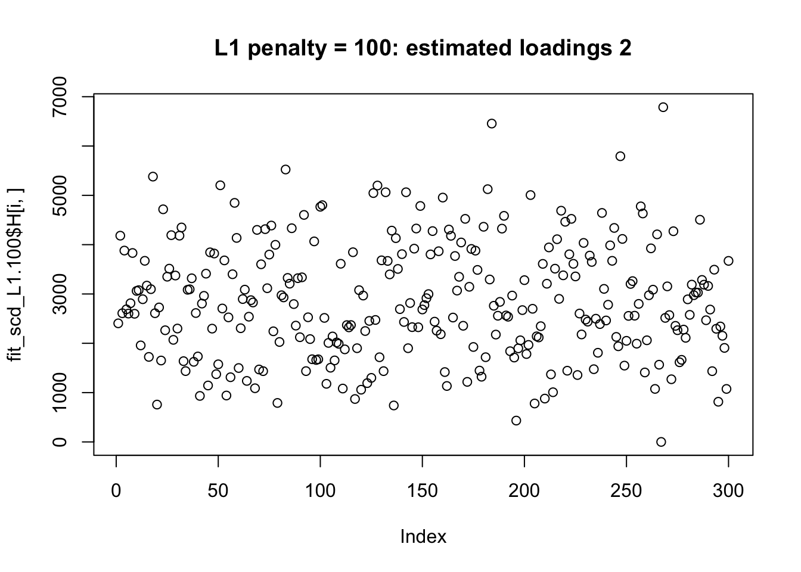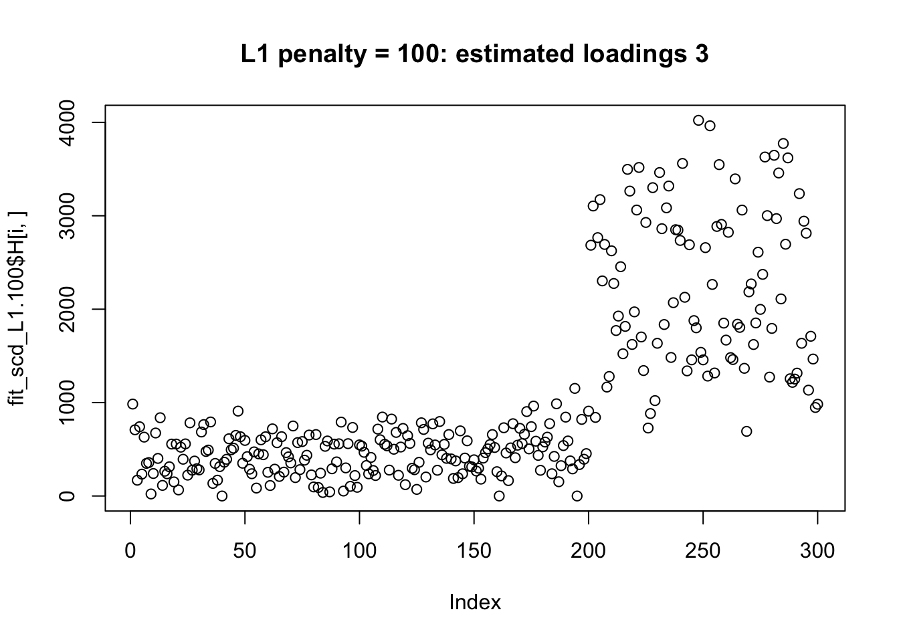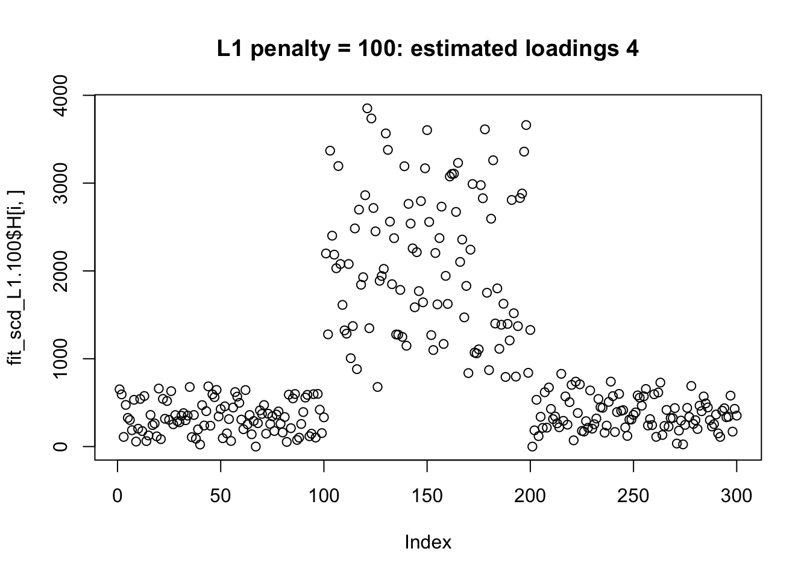
Now we compute a goodness of fit to the true lambda (KL). We see the fit gets worse with penalty increase.
# compute goodness of fit to true lambda
KL = function(true,est){
sum(ifelse(true==0,0,true * log(true/est)) + est - true)
}
get_WH= function(fit){fit$W %*% fit$H}
KL(lambda,get_WH(fit_scd))[1] 967.4376KL(lambda,get_WH(fit_scd_L1.1))[1] 968.8217KL(lambda,get_WH(fit_scd_L1.10))[1] 968.9655KL(lambda,get_WH(fit_scd_L1.100))[1] 966.257
sessionInfo()R version 3.6.0 (2019-04-26)
Platform: x86_64-apple-darwin15.6.0 (64-bit)
Running under: macOS Mojave 10.14.4
Matrix products: default
BLAS: /Library/Frameworks/R.framework/Versions/3.6/Resources/lib/libRblas.0.dylib
LAPACK: /Library/Frameworks/R.framework/Versions/3.6/Resources/lib/libRlapack.dylib
locale:
[1] en_US.UTF-8/en_US.UTF-8/en_US.UTF-8/C/en_US.UTF-8/en_US.UTF-8
attached base packages:
[1] stats graphics grDevices utils datasets methods base
other attached packages:
[1] NNLM_0.4.3 fastTopics_0.1-78
loaded via a namespace (and not attached):
[1] workflowr_1.4.0 Rcpp_1.0.2 lattice_0.20-38
[4] digest_0.6.20 rprojroot_1.3-2 grid_3.6.0
[7] backports_1.1.4 git2r_0.26.1 magrittr_1.5
[10] evaluate_0.14 RcppParallel_4.4.4 stringi_1.4.3
[13] fs_1.3.1 whisker_0.3-2 Matrix_1.2-17
[16] rmarkdown_1.14 tools_3.6.0 stringr_1.4.0
[19] glue_1.3.1 parallel_3.6.0 xfun_0.8
[22] yaml_2.2.0 compiler_3.6.0 htmltools_0.3.6
[25] knitr_1.23